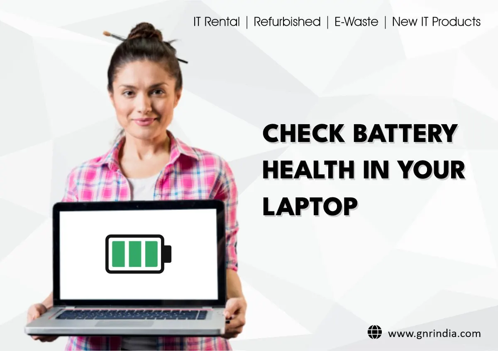

Laptops
Why Is My Laptop Battery Draining So Fast? And How to Fix It
Find common causes of fast laptop battery drain and learn how to improve battery life through settings, apps, screen use and battery care.
Introduction: Understand What Is Using the Power
There could be multiple reasons why the laptop battery isn’t lasting, such as a bright screen, intensive applications and background processes, low wireless signal, peripherals and battery age. The battery life will depend on different factors including the screen size, processor, graphics and battery size.
The first thing to consider is how you are using the laptop. If the laptop is being used for general web browsing it may last a few hours, but if it is being used for more intensive uses such as gaming, video editing or video calls it could drain quicker. This will help you identify if you are wasting power and if there is an issue with the battery getting old or a hardware issue.

1) Reduce the screen brightness
The screen can be one of the biggest power consumers on many laptops. Try to reduce the screen brightness to a comfortable level. If your laptop has an auto brightness feature, try to see if this is working correctly. You can also set your screen to turn off quicker by reducing the timeout. If the laptop has a high refresh rate screen, try to change this to a standard refresh rate for everyday use. Do not have the screen too low that it becomes uncomfortable to read.
2) Disable any background applications
Some background applications may be using too much power, this can be seen by opening task manager on Windows or activity monitor on Mac. Close any applications you don’t need that are using a high amount of resources. Ensure you don’t close any applications you don’t know what they are. Some applications will be using resources due to security software, cloud syncing and OS updates. However if you notice any 3rd party applications are constantly using power whilst you aren’t using them, update them or change their settings.
3) Use power saving mode on the OS
Most laptops will have a power saving option. Changing to an energy saving or balanced option will reduce the background processes and reduce the power the processor is using. The options may vary between different operating systems and manufacturers.
If you are using the laptop for something intensive, change to a higher performance option. If you are just using it for documents, browsing and emails then a balanced option will often be enough. Some laptops will have extra options within their manufacturer’s software. These options can include thermal and power profiles.
4) Minimise battery intensive applications
Using the laptop for video calls, gaming, streaming, graphics and multiple tabs with media in can be intensive. If you are noticing the battery isn’t lasting as long when doing something specific, check to see what the laptop is using more power on. Try to turn off any unnecessary visual effects and close any tabs you aren’t using. If possible, reduce the performance of the applications.
For long meetings, check if using a headset or external monitor is affecting the battery. External monitors can cause the laptop to use more power as they require their own power source. However this can cause the laptop to put more strain on the graphics. Test with the setup you would normally use.
5) Disable Wi-Fi & Bluetooth and peripherals
Wi-Fi and Bluetooth can cause the laptop to use more power. Disable Bluetooth and any USB peripherals which are draining power. If your Wi-Fi signal is weak then the laptop can also use more power.
Try to ensure the laptop is located somewhere with a strong network connection. Avoid having any external drives, hubs or phones connected which aren’t being used. Some peripherals will use power so removing them can help. However this may not be as big of an issue as the screen brightness and performance.
6) Update the OS and drivers
Updating the OS and drivers can improve the power management, sleep and compatibility issues. Update using the OS or the official support software provided by the laptop manufacturer. Reboot and check if this helps.
Avoid installing random driver update software. Only update the BIOS and firmware if it is the correct time to do so for the model. Always ensure you have a stable power source and never interrupt an update.
7) Check the battery condition
Batteries will start to lose their capacity over time. If the laptop used to last 8 hours but now is losing its charge very quickly after many charges, check the battery condition within the OS. If available, check the battery condition using the manufacturer’s diagnostics software. Check what the full charge capacity is and compare it to the original design capacity. This may not be exact.
If the battery condition isn’t great and the battery isn’t lasting as long as it should, it may be worth replacing it with a compatible one. Use an authorised or reputable service provider to ensure you get the correct part number. If the battery is sealed, do not attempt to open it. If the manufacturer states it can be replaced by the user, follow their instructions.
8) Avoid overheating
Overheating can affect the performance of the battery. Ensure the laptop is on a hard surface and the vents are not blocked. Do not place the laptop in direct sunlight. If the laptop is heating up too much when doing light tasks, check the vents are not blocked, there are intensive background processes and if there is an issue with the cooling.
Do not place the laptop in a fridge or use any liquids to cool it down. This can cause condensation due to sudden temperature changes. If the battery is swelling, the case is lifting or there is an odd smell coming from the laptop, stop using and charging the laptop. Get it looked at by a qualified person.
9) Change sleep/hibernate settings
If the laptop is in sleep mode and the battery is draining, this can be due to background processes, network and peripherals. Change the sleep settings within the OS. Choose the correct setting based on how long you will be putting the laptop to sleep for. If you are putting the laptop into storage or taking it out, follow the advice provided by the manufacturer. This will include turning the laptop off and setting the battery to a certain level.
If the laptop is waking up unexpectedly, check the scheduled tasks, peripherals and wake settings. If a device is using a lot of power when it is turned off completely, there may be an issue with the battery, firmware or hardware. This will need to be diagnosed.
10) Turn on battery saver
Battery saver can help reduce background syncing, notifications and more. Turn on battery saver when the battery is at a certain level. Some laptops will have smart brightness, energy suggestions and battery reports for each application.
These features will help increase the battery life by reducing some of the processes. It is important to understand the trade-off. If you need instant notifications and background uploads, adjust the settings. It is better to have a good balance rather than turning everything off.

When should I replace my battery?
If you are noticing the battery isn’t lasting as long, the device is shutting down unexpectedly whilst the battery still has power, the battery is not recognised or charging stops at an unusual level, ask for a battery assessment. If the battery is swollen, overheating, leaking, smoking or causing the case to lift, seek urgent service. Never press, poke or squash the battery.
Before seeking service, make sure you have backed up any important files. Note down the model of your laptop, battery issues and charger details. Ask for a compatible battery to be fitted. Ask for the part to be under warranty. If the laptop is old, see if it is worth repairing.
Conclusion
The battery could be draining quickly due to the screen brightness, intensive applications, background processes, wireless, power settings or just getting old. Check the reports for how you are using the laptop, change the settings sensibly and ensure it isn’t overheating. If the battery condition is poor, get a compatible battery fitted. If the battery is swelling or overheating, stop using the device and get it looked at by a professional. Making small changes can help increase the battery life. However, if the battery is old it won’t be able to be fixed by changing the settings.
Need a hand with your printer or laptop?
Printerworld sells printers, laptops and genuine supplies, and repairs and services both. Bring in your model number and we will help you get it right.